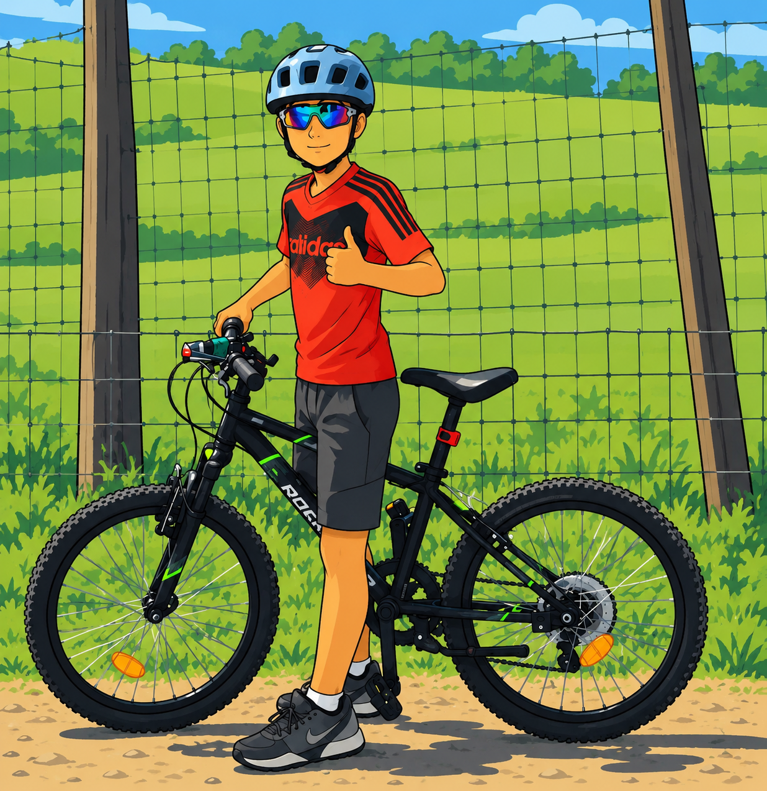

Zona
In esplorazione
↑↓←→ pedala
E rispondi

In sella verso la matematica
Pedala tra i campi, trova i cartelli e risolvi 20 compiti estratti a caso da un archivio di 200 domande. Se li completi tutti, Andre ti regala un finale da campione!
Muoviti per la mappa
Rispondi al cartello vicino
3 stelle se indovini al primo colpo
Nessuna fretta: puoi riprovare tutte le risposte.
Guarda Andre: impennata finale su una ruota sola!
Nuovo record personale!
Premi Invio per tornare a esplorare